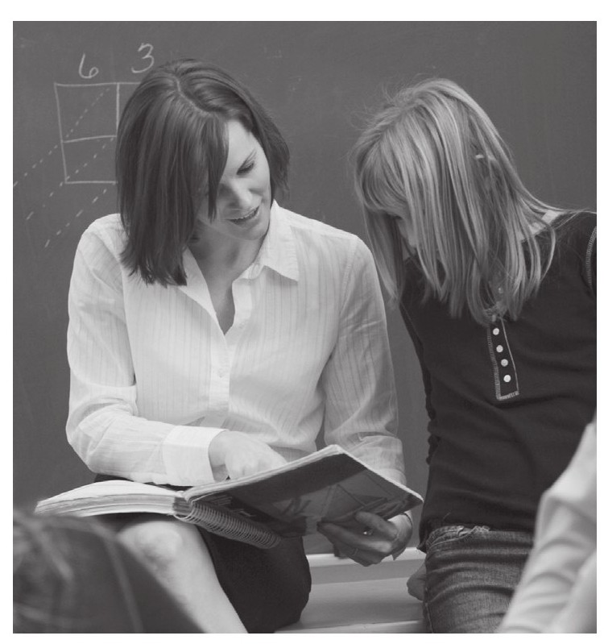
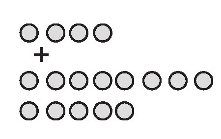
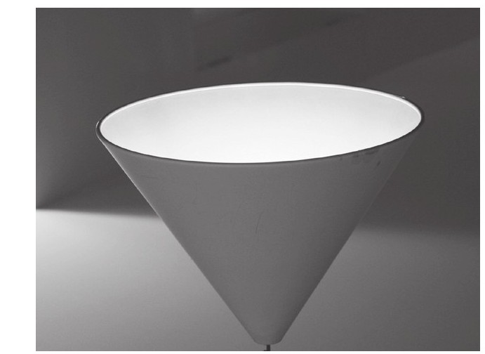
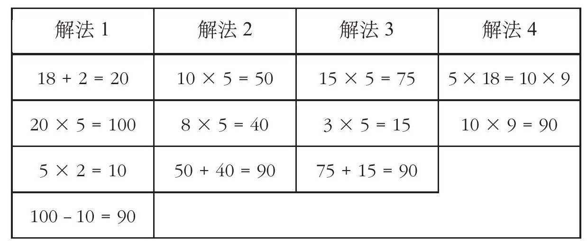
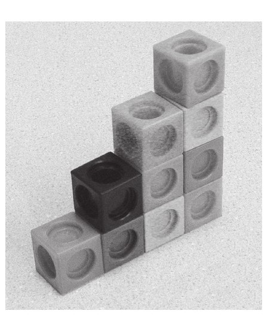
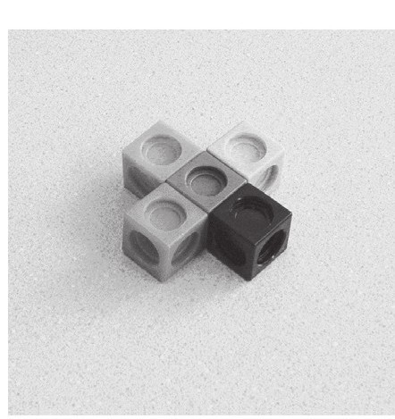
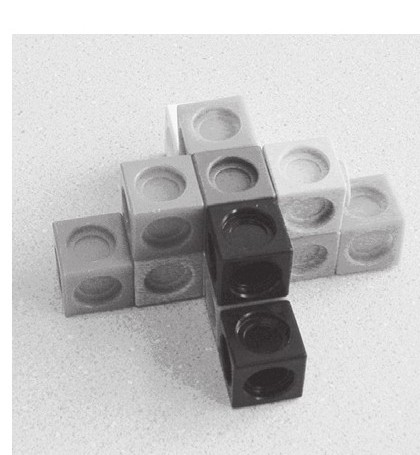
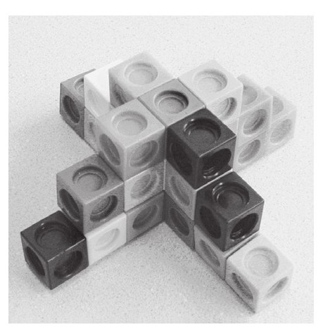
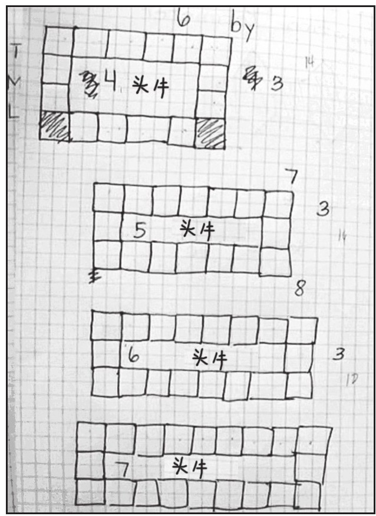

所有的家长都会面临着一项极具挑战性的任务：那就是寻找最佳途径使孩子们的社交、情感、心灵、精神还有智慧等方面得以全面发展。作为两个孩子的母亲，我清楚地知道这项挑战有多么的艰难。其中最困难的屏障在于许多家长都要处理孩子和数学学习之间的关系，尤其是许多孩子在学校采用消极式的态度去学习。正如我在前面章节提到的，孩子们与数学之间的关系对于数学学习来讲非常重要，孩子们与数学关系的恶化足以强大到摧毁他们的信心，孩子们在学校不愉快的学习经历不仅会让他们感到能力不足和愚钝，更会限制他们在数学学习上的进步，进而影响他们以后的生活。幸运的是，有一些数学学习方法可以对家长起到很大帮助，不论他们的孩子是刚刚入学还是正处于学习困境中。在本章与下一章中，我将会分享一些这样的数学教学辅助方法。
这一章的内容将会为后面章节做出重要铺垫，我将会回顾一些调研结果，这些调研结果所提及的教学方法将会对学生们后续的学习起到至关重要的影响，这些方法曾使数学成绩差的学生在后续学习中取得长足的进步。在本章的前半部分，我将会详细地介绍某些特定数学教育方法的开展模式，在本章的后半部分我将会讲述一些真实的教学记录，这其中就包括了我和我的学生通过一些专项的教学方法，来引导那些数学成绩差的学生迈向数学学习的正轨。这些学生同很多人一样，在经历了长时间的数学学习折磨后依然未找出有效的学习方法。我把对这些学生开展教育的具体情况写出来，是因为我相信其中的一些细节会对家长起到一些帮助。
当然我们只有5周的时间在暑期课程中尝试这种新的教学模式，我们的成功之处在于，家长运用所掌握的辅助教学方法，在家中帮助孩子学习一段时间后取得了显著成效，我同样还会讲述一些孩子在听完暑期课程后对于数学学习态度的转变过程，还有他们曾经所处的教学环境以及拒绝数学学习的原因，通过这样的方式来让读者反思自己的孩子在学校学习时是否会面对同样的壁垒。在下一章中，我将会向家长介绍一些数学教育方法，以便帮助他们的孩子更好地学习数学，同时也可以配合老师以及学校的教育教学，使孩子们的学业取得更大进步。
在1994年，两位英国专家Eddie Gray和David Tall发布了一项极具影响力的研究结论：他们发现了孩子们学习数学如此吃力的原因所在[1]。这项研究发现非常重要，美国所有的数学课堂教学都应该对此有所反思。
Gray和Tall对年龄在7～13岁的学生展开了一项调查研究。他们让老师对自己班上的学生进行分层，划分为平均水平以上、平均水平和平均水平以下，从中随机抽取72名学生。两位专家让这些学生去做各种各样的数学加减法运算。其中的一类题型是一位数与两位数的加法问题，例如：4+13。随后他们对学生们所采用的不同算法进行记录。这些不同的算法对于预测学生的水平至关重要。
让我们用4+13来举个例子：

解决这种加法问题的一种算法被称为“全部计数法”。采用这种算法的学生们先逐个数出4个圆点并计数；然后再数另外13个圆点并逐一计数，最后再将所有圆点数从1至17汇总，这是学生在最初学习加法运算时所采用的计数方法。
由这种计数方法延伸出的更为精妙的算法被称为“期望计数法”。采用这种算法的学生一般是从1数到4，再从5数到17。
第三种算法被称为“通晓计数法”。有部分学生在未经计算和思考的情况下就已经知道了最终结果，因为他们已经将其印在了自己的脑海里。
第四种算法被称为“推断计数法”。这需要学生们将数字进行分拆与重组，从而得到他们更加熟悉的数字以方便他们进行加减法运算。因此他们也许会说：“嗯，我知道10+4等于14。”在此基础上再加上3就得到结果。
这种拆分与组合数字的方法对于数学计算来讲非常有帮助，尤其有助于帮助学生心算。例如你需要计算96+17，对于多数人来说，这个烦人的加法运算是如此的令人望而却步，但是如果我们将4从17中分离出来并与96相加，那么这个加法问题就变成了100+13，如此一来这道数学题会变得更加简单。
那些擅长数学运算的学生能够对这种拆分运算运用自如。两位研究者将这种方法称为“基于实际问题的运算法”。学生们运用拆分与组合的方法将他们不熟悉的数字转化为自己熟悉的数字，从而使运算变得更为简便。
研究者们发现，在超过8岁且学习在平均水平以上的年龄组中，有9%的学生采用了期望计数法，有30%的学生采用了通晓计数法，而有61%的学生采用了推断计数法。处于同样年龄组且位于平均水平以下的学生情况是：有22%的学生使用了全部计数法，有72%的学生采用了期望计数法，有6%的学生采用了通晓计数法，但是并没有学生采用推断计数法。而正是缺少采用推断计数，是该组学生成绩下滑的原因。
当去研究10岁年龄组的学生时，两位专家发现在平均水平以下的学生使用通晓计数法的比例与平均水平以上学生差不多，因此你会不由得联想学生们在这些年的学习中可能已经将某些知识烂熟于心了。但是我们需要注意的问题是，平均水平以下的学生依然几乎不会推断计数法。相反地，他们还是依靠老办法一个个地数。我们通过这项实验并结合其他一些例证发现的情况是：那些高水平的学生真正去刻意记住的知识也许不多，但是他们却以一种独有的方式在学习，而且他们在面对数字运算时能够灵活地运用思维去拆分与组合数字。
两位专家对于他们的实验发现做出了两条重要结论：第一条是成绩差的学生通常被认为学得慢，实际上他们在学习一成不变的知识时速度并不慢，但是对于掌握数学中的各种模式变化则变得很慢；第二条是数学学习对于成绩差的人来说是更为困难的课程。
当数学成绩差的学生面对减法问题时，可能对于他们来讲难度就有些大了，他们不得不采用倒数计数的方法来计算。举个例子，当他们在计算16-13这样的问题时，会先从16开始往下面数出13个数字，再依次相减（16→15→14→……→5→4→3）。如果以这样的方式来处理的话，那么对于大脑运算的负担过于庞大，并且有极大的可能性会出现错误。而那些在平均水平以上的学生可不是这样处理的，他们说：“从16中拿走10还剩下6，再从6中拿走3就剩下3了。”这看起来是不是更为简单？
我们从研究中不难发现，那些数学水平很高的学生能够熟练并且灵活地对数字进行拆分与组合，而学习成绩差的学生恰恰没能掌握这个方法。
专家们还发现，当成绩差的学生发现自己的方法不奏效时，他们不会做出相应调整，而周而复始地走老路。事实上，一些成绩差的学生在数量级不大的数字运算方面表现得极为高效，这能够反映出他们内心所寻求的一种安全感。成绩差的学生慢慢开始相信，为了能取得好成绩，他们需要对数字计量得非常精准，但不巧的是，随着时间的推移，想要在数学方面达到这样的高度变得越来越困难，在许多复杂的运算条件下，他们依然采用如此老式的计算方法。与此同时，成绩优异的学生早已摒弃了这种烦琐老套的办法，转而去寻求灵活的数字算法。这当然是一种更为简便的方法，但这也同样是数学学习的重要方法。就在低水平的学生还在固守着那些最原始的办法时，那些高水平学生已经能够灵活运用新方法在数学的道路上越走越远了。
这并不让人感到奇怪。研究者们发现，成绩差的学生在放弃使用灵活数字算法的同时，也错过了机会学习其他一些重要的数学理念。人们在学习数学时所做的一件重要事情就是对相关数学知识在头脑中的压缩记忆。我们可以这样来理解，当我们在进入新的数学领域时，就拿刚刚开始学习乘法来说，我们可能在接触全新的思路和方法时有很多不适应的地方，而且可能需要多做练习题来帮助我们熟悉。一旦我们能够熟练使用乘法时，在大脑中就会把这些知识进行相关压缩，简化脑部神经的反应流程。在我们使用乘法进行运算时，就会很熟练地写出步骤，大脑不会再重新将所有的运算流程全部呈现出来，而是直接给出简化后的结果。
菲尔兹奖得主William Thurston这样来描述数学学习过程：
如果我们用一种可视化的方法来形容数学学习的话，我们可以将其想象成一个开口朝上且横截面发光的圆锥体。最上面的圆形发光部分就好比我们正在学习的知识，而越来越狭窄的部分就好比我们此前已经学习并掌握的数学知识，很显然我们对已经学到手的知识进行了压缩。

正是这种大脑对于知识的压缩使人们能够很方便地去使用很早以前就学过的知识，比如加法或减法等。每当调用这些方法时，那些已经把这些方法烂熟于心的学生就不用再去做细致的考虑了。Gray和Tall发现数学成绩差的学生很少使用知识压缩这项技能，他们将注意力集中在对不同数学方法的记忆上面，将学到的方法不断堆叠，这样也就很难形成统筹全局的视角，并且他们实际上不懂得如何对已经掌握的知识在头脑中进行压缩。因此对于数学成绩差的学生来讲，数学学习并不像是在扩大椎体的圆面积亮度，而更像是去攀登一架直冲云霄而且看不到尽头的梯子，梯子上的每一级台阶都代表将要学习的一种新方法。
缺少将数字灵活拆分组合以及对以前所学到的知识进行适当压缩能力的学生，经常会错误地使用数学模型。需要有人去帮助这些孩子，来转变其对数学的错误观点认知，并且指导他们灵活地去运用数字运算，以及思考各种数学概念。但事实却是不但没有人去帮助孩子们纠正学习方法，反倒是在现实情况中将孩子们直接贴上了“差生”的标签。老师错误地认为这些孩子需要去做更多的练习题，并让他们在课堂上一遍又一遍地去背那些所谓的运算方法。而这反过来更加深了他们对于数学的错误观念及认识。其实应该让他们更多地与数字接触，培养他们对数字的感觉。关于这一点我会在下一章讲到。
值得庆幸的是，不论处于何年龄段的学生，都有机会去培养他们的数字感觉和理解能力，怀着这样的信念，我和我的学生开始着手，为那些数学成绩不如意的学生设计辅导计划。我试图教会他们如何灵活运用数字，这也正是我们这段故事的开始。
在我准备为那些加州六年级和七年级的学生开设暑期数学课程的时候，心里不免有些紧张。因为这距离我上一次给学生讲课已经好多年了，而且我所有的教学经历仅限于在英国伦敦，而我是在旧金山的海湾地区为学生开设为期5周的暑期课程的。暑期课程并非传统意义上的严格数学教学，由于学生们在这里的时间会非常短暂，所以通常很难建立起一整套完备的数学教案，而且参加此课程学习的学生水平参差不齐。其中一些学生非常喜欢学习数学，并且希望在课余时间用更多精力来了解这门学科，另一些学生则是由于数学考试成绩不及格而被老师强迫来参加。从成绩来看，参加暑期课程的学生中有40%在上一学年取得了A或B的成绩，还有40%的学生取得了D或F的成绩。
我和我的4位研究生——Nick, Tesha, Emily, Jennifer将六年级和七年级的学生分成了4个班，每天开展两小时的数学教学，每周有4天开课。采用老师带领学生学习的方式，这有助于我们来研究在课堂上的教学效果；此外，我们通过对学生采用调查问卷、访谈以及知识测评等多种模式来检验他们的最终学习效果。参加暑期课程的学生来自不同的地区（39%是拉美裔，34%是白人，11%是非裔美国人，10%是华裔，5%是菲律宾人，1%是本土美国人）以及不同的社会阶层。在这里我会对暑期课程的教学做一个简短的描述，并通过讲述4位年轻人的有趣学习经历来说明教学效果。
本次暑期课程的教学目标之一，就是给学生们充分的机会，让他们灵活地学习数学以及掌握数字的拆分与组合。我们同样还想教会学生如何去提问，去探索不同的数学模型与概念间的相互关系，并学会思考、概括、解决实际应用问题。以上这些都是数学学习的重要方法，但是它们却又常常被学校的课堂教学忽视。因为这里的多数学生都有在上一学年中艰难完成数学学习任务以及背诵各种数学公式的经历，而我们这种课程对于他们来讲则是一种全新的体验。我们决定将暑期课程的教学重点放在培养学生的数学思想上面，这对于孩子的未来发展非常有帮助。还有就是那些重要的数学方法同样也是我们讲课的重点，这其中就包括如何去提问，如何灵活地去运用数学、逻辑推理以及各种数学表示法。这些方法对学好数学这门学科至关重要，但同样都被学校忽视了。
尤其是对于六年级和七年级的学生来讲，我们本可以假设他们已经掌握了在数学课堂上的提问方法，这样的假设本应看起来比较合理。其实学会提问题对于一名学生来讲非常重要，并且这对于提升课堂听讲效率来说是切实有效的手段。但是研究结果却发现，随着他们年级不断上升，他们在课堂上提问的频率不断下降，并且让人感到惊讶的是，有些班上的学生几乎在听课时从不提问[3][4]。事实上这样的研究结果是在告诉我们，随着年级的升高，学生们学会的不是如何去提问，而是如何保持课堂安静，即使是在他们听不懂讲课内容的情况下也是如此。
提问题这种学习形式，一方面可以提升学生们的数学水平，另一方面也可以改善学生们对数学学习的态度。据我所知，那些在课堂上提问次数较多的学生通常具有较高的数学水平[5]。但即便老师认为学生的问题是有价值的，他们也不会明确地鼓励学生发问。但是在此次暑期课程中，我们不仅鼓励学生提问，并且还教会他们如何评价问题质量的高低。
我们以讲解提问对学习的重要性为切入点，开启了我们本次的暑期课程。当学生们提出了一个好问题时，我们会将他们的名字写在大幅海报上面，并悬挂在教室里。我们同样也会提出一些问题让学生们自主思考并且将问题进一步延伸。在暑期课程接近尾声的时候，这些学生在接受我们的访谈时表示，学会提问是学习数学最有用的一项技能。
我们将数学教学的另一方面放在了鼓励学生去学习推理思考上面。学生对问题的推理来源于他们在提问后的自主思考过程，比如验证一项数学推断，解释一种方法的意义所在，以及在面对他人质疑时，解释自己所用方法与作答的准确性等。[6][7][8][9]那些尝试着学会思考，并以此判断自己作答是否正确的学生会发现，数学其实可以学得比较透彻，而不仅仅是死记硬背一些公式。我们会时常让他们思考自己在题目作答时的合理性，并且让他们周围的同伴对其作答结果加以验证。在暑期课程结束的时候，学生们已经自觉地养成了这种习惯。当他们在讨论数学问题或思想时，都会自发地相互激励，并去讨论和验证各自的想法。
除了教会学生提问和思考外，我们同样强调学会使用各种数学表达式的重要性。解题高手通常能够使用各种各样的数学表达式来解题和交流结果。比如他们可以将一个以数字形式表达的问题转换为以图形或图表形式表达的问题，这样更有助于他们发现同一问题的不同侧面。或者他们会选择用一种特定的表达方式来强调问题的某一重要特性，从而使其他人能够更好地理解自己想要表达的观点。在诸如工程学和医学等与数学相关的专业领域中，数学的模式表达通常是其工作内容的组成部分[10][11]，不论是在理解他人观点还是在相互的观点交流过程中。
虽然数学表达式是数学教学工作的重要组成部分，而且也是那些解题高手在面对问题时第一步要做的事情，不过老师在课堂授课时却很少去教学生这些方法。我们暑期课程的教学过程就特别留意这一点，我们会将数学问题以不同的方式呈现在学生面前，尤其强调了对图形外观方面的表述，这其中就涉及绘制（比如立方体和球体）图形和图表等相关方面的教学。我们将锻炼学生对问题的描述表达，并将此训练作为他们的家庭作业之一。在后来学生接受采访时表示，之前从不知道可以用这种可视化的办法来表达数学思想和理念，没想到这些工具对于他们的数学学习是如此的有用。
我们为学生设置的很多数学问题，都是为了鼓励他们去尝试灵活地拆分数字；同时我们也将这种能力作为一项课业评分标准。据我所知，关于灵活运用数字运算的最优方法，是由Parker提出的“数字心算法”。在训练学生使用该种方法时，老师会要求学生独立作业并且不能使用任何纸和笔。老师会在黑板上出一道计算题（一般是加法或乘法计算题）或者直接口述题目，学生们则需要用心算来得出答案。
我们来用18×5这道题目来举个例子，老师让学生们在得出自己的答案后单独示意，比如竖起大拇指，但是不能用举手示意的方式，因为这会很容易引起其他同学的注意，并会在无形中给他们施加压力，而且也很容易把教学演变成一项考验做题速度的比赛。在这之后，老师会让学生们讲述不同的做题方法，下面我们来看看4个学生对于这道题的不同解法：

这些不同的解题方法都涉及数字的拆分与组合，因此可以将最初的计算方法转换为一种等价且更为便捷的算法。在学生们说出自己想法的同时，其他人也可以在第一时间了解拆分算法的不同应用。
随着学生们对“数字心算法”的深入学习，他们很快地发现完成数学题毫无压力，并且可以任意选择自己所熟悉的算法，因此这样的方法得到了大家的欢迎。而且有一些学生还是首次接触这种心算的数字拆分组合法，正如Gray和Tall所说：“看到别人能够熟练应用这种方法去解题，学生们很快就意识到了这种方法对数学学习的巨大帮助。”许多学生纷纷表示“数字心算法”是此次暑期课程的一个闪光点，因为学生们喜欢去尝试新鲜的挑战，更不用说能从这种挑战中分享和学习到不同的数学方法了。
虽然说数学这门课程向来有这样一种说法：每一类问题都有其特有的标准解题方法，这些解题方法通常都是老师要求学生去背诵的，但是现实情况却相去甚远。数学之美就在于能够从不同视角、用不同方法审视分析同一种问题，虽然用各种方法最终得到的答案是一致的，但是我们所选择的是不同的路径。当我们询问学生用什么样的教学方法才能够帮助他们学习时，他们更多地希望能学会用多样化的方法去解题。这是我们此次暑期教学的侧重点，其重要性仅次于合作交流的学习方式。
在暑期课程开课的第一天，我们发给学生们每人一本日志，以供他们叙述和记录在这5周课程中形成的一些感想体会。我们希望这本日志可以成为学生交流思想的中转站，对于一些性格内向且不愿在公共场合表达自己想法的学生，日志就成了他们表达思想的一种很好方式。我们会时不时地将日志收上来，了解学生们对于课程的想法，并且及时给予他们反馈。这里的学生在此前几乎很少有机会能把自己对于数学的想法写出来，或者为此专门准备过笔记本，因此这种方式对于他们来讲十分重要。
在绝大部分课程中，学生们都采用小组或两人合作的学习模式。通常在一些课程中，我们允许学生自由组合；而在另外一些课程中，我们会为学生指定位置并分配相应的组员，使他们的学习更有效率，还可以让他们接触各种类型的人，从而汲取不同的数学思想。让学生自主地组队是本次暑期课程做出的承诺之一，即我们鼓励学生自主选择，让他们体会充分的自由以及强烈的责任感。我们想要强调的是学生要对自己的学习情况负责，并且鼓励他们在课堂上去转变自己的学习态度和学习方法。
在此次的暑期课程中，我们采用多种教学方式，当然这也是数学教育的一个重要方面。在数学教学中存在许多颇具效果的教学方法：老师讲课、学生讨论、独立学习等。而且我们此次有多种教学计划的伴随题型可供选择：从联立方程等大型题目到抽象描述等小型题目，一应俱全。但是这些教学方法及题目需要与学生各自的学习风格相匹配才可行，尤其在他们未来的工作和生活中处理实际问题时形成自己所独有的行事风格尤为重要。那些接受过传统数学教育的学生，普遍会抱怨这样的一个问题（当然这样的抱怨是合理的），那就是对千篇一律的教学模式的不满。这也意味着学生在将来的工作中也会像在学校学习时一样，去单纯地模仿展示在他们眼前的各种标准化流程。
在我们的暑期课程教学期间，我们会时而以班集体的方式去讨论问题，时而又以学习小组的方式去讨论问题。对于一些大型问题，我们会让学生以小组讨论的方式着手应对，而对于一些小型问题，我们则会让学生独立完成。我们为学生留的作业会与他们的实际学习需要相匹配，这一点颇类似于Phoenix Park和Railside高中的课程模式。而且我们还会为学生设计一些具有实际应用价值的问题，比如与世界杯足球赛事有关的题目。在世界杯足球赛事这类题目中，学生们需要计算哪两支球队需要进行比赛，以及总共需要进行多少场赛事，其实这就是排列组合的入门知识。有时我们会指派一定量的作业任务让学生完成，有时我们会让他们自己选择感兴趣的作业类型以及制定任务完成时间。当然我们也鼓励学生们去试着运用自己的思路将问题拓展延伸，并选取他们认为最适合自己也是最有效的方法去应对问题。
在所有的暑期课程中，我们一直鼓励学生们去提问、去表达、去思考、去归纳、去学习不同种类的方法。我们同时也花费了大量时间去建立他们对数学学习的信心，并且对于他们的课业以及出色的想法给予表扬与肯定。
在暑期课程结束的时候，我们会让学生们做几个月以前已经在学校考试中完成过的代数测试题。虽然我们并不知道课程的考试范围，并且没有针对考试给学生们进行过任何的专项复习，但是学生们最终的成绩与此前相比有了明显的提高。也就是说，在事实上我们讲课的范围已经远远地超出了考试所涉及的范围。在参加此次暑期课程之前，所有学生的平均分是48分，而在暑期课程结束后，学生们的平均分是63分。
对学生们的调查结果显示，87%的学生认为暑期课程要比他们平时数学课上所学的知识有用得多，有78%的学生表示他们更喜欢这样的授课方式。在对学生的采访中，所有学生都对暑期课程做出了正面积极的评价。其中一些学生告诉我们，他们平日在校园里的数学课非常无聊且令人沮丧，部分是因为他们不得不以绝对安静的方式去学习。当谈到暑期课程时，学生们讲述了自己愉快的学习经历，尤其是在和同伴的合作当中，他们一起学习了乘法应用，分享了各自的解题思路，通过自己的推理和思考发现了各种各样学习新知识的机会。
除了对学生的访谈还有不记名调查问卷中给出的积极反馈外，学生们在暑期课程的出勤率也有了很大改观。在第一堂课上，我们让学生填写了一份调查问卷，主要询问是谁让他们来参加暑期数学课程的，他们是否愿意来上课。结果显示有90%的学生都不是自己主动来的，并且他们当中有很多人自己并不愿意来上课。主要理由就是他们觉得这将会非常无聊，并且会浪费美好的暑假时光，他们宁愿去和朋友们参加各种各样的社会活动，那才是有意义的事情。也就是说，大多数学生在暑期课程开始时都缺乏足够的学习热情。
在首节课上，有些人安静地坐在座位上，用手臂或帽子挡住自己的脑袋，以免引起别人的注意；有些人则是把朋友一起带来，大声地聊着天，以这种方式来表示自己的抗议。我们在刚开始时还有些担心，但是随着暑期课程的开展，学生们的学习态度发生了极大转变。在几天过后，学生们开始按时上课，并且表现出极大的学习热情，他们在讨论问题时非常认真，并且对数学产生了兴趣；通过参加课堂的集体讨论，他们开始将兴趣出发点由社交转移到对数学的关注和学习上。
当学生们最后回到自己所在的学校上课时，我们又继续跟进了解他们的学习情况。我们的相关人员走进课堂，去观察老师的教学方法以及学生的表现与课堂参与度。结果却令我们担心，因为我们又一次看到学生们安静地坐在自己的座位上，去学习那些循规蹈矩的程式化问题。很遗憾学生们又回到了令他们厌恶的教学环境，在这种环境下他们无法施展自己的能力，并且也没有机会去使用在暑期课堂上掌握的那些方法。这让我们不得不担心学生们在暑期课堂上培养起来的对数学学习的积极性能保持多久。即使经历了暑期课程的熏陶以及掌握了新方法以后，我们也很难相信，他们再回到以前那种糟糕的教学氛围还能像之前那样表现出色。
当然这就需要家庭教育引导孩子继续走在正规的学习道路上。我很高兴能看到参加暑期课程的孩子们在最终成绩方面都有了显著提高，而那些没有参加的学生成绩并没有任何改观。但不幸的是，学生们对数学学习重燃的热情以及上升的成绩趋势并没能持续太久，他们中有很多人在下一个学期的数学成绩又回到了原来的水平，当然我们对此并不感到惊讶。
一部分学生在参加了我们的暑期课程后取得了较高的成绩，而且在这之后他们在数学学习方面一直保持着高水准。对于这些年轻人来说，暑期短短几周的课程介入为他们提供了一种学习数学的新方法，而且他们可以将这些方法继续应用于自己的学习当中。我们为此采访了Lisa，她是其中保持较高学习成绩的学生之一。当我们问她暑期课程对于她在学校的学习有何影响时，她说：“当我不知道如何用老师教的方法解题时，我会另辟蹊径。”Melissa在参加暑期课程前的数学成绩是F，而在参加暑期课程后的数学成绩达到了A，她告诉我们，在暑期课程中收获最大的就是掌握了学习方法，尤其是“当你不确定时，你可以大胆地去提问”。对于课堂的教学形式，她也同样谈道：“我曾经痛恨数学是因为太过无聊，但暑期课程却让我体会到了无尽的快乐。”Melissa从数学学习中体会到的快乐以及她所掌握的学习方法，从某种程度上对她的成绩有着很大的影响。我将会在下一章谈到暑期课程的哪些教学方法同样可以在家庭中应用。
关于暑期课程学生整体学习情况的调查反馈结果是乐观的，不过我们还可以通过一些个案来说明为什么一些学生会远离数学。让我们来看看下面这4个学生的情况：
参加暑期课程前，Jorge在学校时的数学成绩是D或F。他来参加暑期课程时脸上洋溢着灿烂的笑容，和同来的3个朋友有说有笑。在大多数时间里，他都会穿着那条肥大的蓝色裤子，还有那顶只有在老师的好言相劝下才会摘掉的奥克兰进击者队的球帽。在第一节课上，Jorge和他的朋友们一直在有说有笑地聊着天，几乎不做任何与数学课堂有关的事情。Jorge在课堂上形成了一种群体风气，他可以通过自己的风趣和魅力，在无形中将他的朋友们带离学习的环境。从Jorge在课堂上的表现，我们就能看出来他为什么会在学校表现不好了。在Jorge身上拥有着所谓“坏男孩”的一切特征，不但自己不学习，还影响其他人的正常学习。
在暑期课程的末期，我们再来看一看Jorge的表现，在这位“坏男孩”身上依旧能看到第一天上课时的那些行为。他依然还需要很长时间才能进入学习状态，依然还在大家讨论问题时开各种玩笑，依然还会对准备上台发言的同学小声地讲些什么。然而，他对数学学习的态度却很认真，就像他在调查问卷中所写的，他从未在任何一堂课上如此认真地学习过。在课堂讨论的过程中，他在认真听取同学发言的同时，还主动贡献自己的想法和思路。这段时期，他表现得对学习更加专注积极，并且和同学开玩笑、分散大家注意力的次数少了。无论是在课堂上还是在小组学习中，他越来越专注于和别人探讨数学，而不是作为一名“数学差生”带领大家讨论那些引以为自豪的社会活动，从而提升自己在他人心目中的地位。
最让人感到吃惊的是，他和另外两位同学在某次学习中曾花费了1小时的时间刻苦钻研某个极具挑战性的数学问题。他们几乎将全部精力都放在了问题的解答分析上面，即使他们换了一个地方，并且在旁边有两位女学生在学习时，他们也没有受到丝毫的干扰。事实上Jorge并没有注意到别人在干什么，他继续将精力放在刚才的题目上面，当在研究过程中遇到问题时，他会首先发问并说出自己的观点。他有很长一段时间全身心投入到解题上面，这与他第一天来到这里的情景形成了强烈反差。
从Jorge的学习日志和访谈中可以看出，是暑期课堂的这种学习氛围影响了他，使他更加愿意去认真学习数学（当然对于这位率性十足的男孩来讲，他仍然需要继续努力）。值得注意的是，Jorge说他在暑期课程中的表现要比平日里在课堂上的表现更加努力，他同样认为暑期课程的学习很有趣。他说：“平时的数学课堂上讲解的内容过于简单和乏味。但是在这里你们会出一些具有挑战性的题目让我尝试，而我不得不把解答过程中的所有可能性都考虑在内。”
当被问到对老师有何建议以促进教学水平提升时，他认为老师们应该更多地提供一些具有挑战性的问题。同时他也告诉我们，他很感激自己能够得到重视，并且被视为有能力学习数学的学生。
当Jorge谈到自己在暑期课程中曾面对的挑战性题目时，他一方面谈到了自己有能力去解决这些难题，另一方面也谈到自己需要花费一定的时间去解题。他解释到，自己很喜欢接触这种形式多样化的问题：“正是因为我们要在题目上面花费一定的时间，我们才能真正知道这类题目的关键点在什么地方，还有就是我们应该如何下手。”
在Jorge认真对待数学学习的那段日子里，他感兴趣的都是能够通过很多种方式去解答的题目，他能有机会和自己所仰慕的“学霸”们一起讨论问题。Jorge最终带着对自己数学成果的骄傲，信心满满地准备回到学校去努力学习数学时，他将面临的却是自己不得不独自学习，并且在学习中找不到任何有难度或有趣味的题目。所以没过多久，Jorge就又回到了那种社会化的“坏男孩”模式，数学学习也就被随之抛在脑后了。在暑期课程结束后的第一个学期他的成绩是D，在第二个学期他的成绩变成了F。
在我从事学校老师和研究人员大约20年的时间里，我曾见到过许多像Rebecca这样的学生，而且她们中多数还都是女孩子。Rebecca的认真、积极和聪慧都是很优秀的特质。即使她的数学已经取得了A+的成绩，她也没有觉得自己多么擅长数学。像其他学生一样，Rebecca能够跟上老师的讲课进度，并且可以完整地复述出老师讲课的内容，但是她想用自己的方式去理解数学，她认为那些在课堂上所讲的程式化的数学知识并不能引领她走进数学的世界。在采访中，Rebecca被问及是否认为自己是“为数学而生”的人时，Rebecca表示了否定，她说道：“因为我的记忆力不好，而在数学中有太多的知识需要记忆了。”
每当听到学生说数学中有太多的知识需要记忆时，我就能了解到他们所接受的教育是多么的糟糕，而且这已经偏离了数学这门学科本来的面目。学生已经被老师讲课中的各种程式化的解题步骤震撼，打心底里开始相信这些都是必须去记住的。而与之相对的是，学生们却没有尝试探索每一步解题背后所蕴含的数学意义，其实对于知识的记忆远没有那么重要。
Rebecca向我解释道，她为了应付考试而不得不去死记硬背那些数学知识，但这些知识往往脱离实际，很难去彻底记住。Rebecca所经历过的这种教学模式会让她产生挫败感，即使她最后的考试成绩是A+。
我们的数学课程与此大不相同，我们教给学生去体会的是连接各类数学方法背后的策略与思想，让学生们有机会真正理解数学。在参加本次暑期课程前，老师曾在Rebecca的评价中写道：“她不会在任何公共场合发言，因为她过于害羞。”但是随着Rebecca开始适应我们的讲课模式，并且很高兴地发现这有助于她更好地理解数学后，她不但在课堂上积极举手发言，而且更愿意走上讲台，去和大家一起分享自己对于问题的见解。
一些读者也许会担心高水平学生与成绩是D或F的学生在一起上课是否合适，对于这点，Rebecca显然没有任何意见。不论是在课堂上还是在采访中，看起来她并没有因为班级中学生水平的差异而感到任何约束。相反的是，她在自己的学习日志中写道：“能够和不同背景的同学一起上课其实更有助于学习，因为我们可以更加从容使用课堂时间，让每个人都能学会知识，而且我们还可以相互分享不同的学习方法。”
当问到Rebecca从暑期课程中学到了什么时，她谈到了许多方面的收获。她说自己已经学会去总结各种数学表达方式，并且能简单地记住它们，她还学会了心算两位数的乘法（从“数字心算法”中学到），然后学会了如何有效地组织语言去提问。用她的话来说就是她已经学到了“思考远远不只是为了得出答案”。
在暑期课程结束后，Rebecca依旧保持着A+的学习成绩。但是我们相信她不会再将数学看作一门只需要记忆的课程，从而失去了对知识的理解和体验学习快乐的机会。
Alonzo很容易被误认为是那种由于太受大家欢迎而被老师过度留意的孩子。他经常会被很多学生围住，不论是在课上还是在课后，从他的眼神来看，他似乎很享受那种被崇拜的感觉。在暑期课程开始的那几天，他会尽量在不被大家发觉的情况下匆匆忙忙地赶到教室，然后尽量把他的橄榄球帽檐压低，就好像要把自己隐藏起来一样，之后安静地聆听着课程。随着暑期课程的推进，Alonzo的表现有所变化，他对数学学习的好奇心以及创新性开始慢慢地生根发芽。一旦他有机会按照自己的想法去学习数学，他便开始与众不同。
就像参加暑期课程的其他学生一样，Alonzo之前的数学成绩是F，所以不得不被他的老师强制派来参加这次暑期课程的学习。Alonzo将之前课堂上的场景描述为“老师讲课，然后学生奋力做题”的模式，而小组合作学习的模式几乎是不可能的。Alonzo说：“在那些所谓‘正规’的数学课堂上，我需要不停地去记去写。同学相互之间不允许交谈，或者不能像现在这样侃侃而谈（如果交谈被允许的话）。老师不会问：‘需要我帮忙吗？’如果你向他提议的话，得到的答复也是否定的。老师只会给你一张纸、一支笔，然后让你开始做题。”在私下交流时，Alonzo认为之前的数学课令人感到无聊和沮丧。
激起Alonzo好奇心和创造力的是一项名为“搭建阶梯模型”的教学活动。在这项活动中，学生们需要计算搭建阶梯模型所需要的方块总数，这种阶梯模型具有如下规律：最上面一层放1个方块，往下一层是2个方块、3个方块……以此类推。学生们需要计算搭建10层阶梯模型所使用的方块总数，然后是100层，最后需要求出任意高度的阶梯模型所使用方块总数的代数表达式。在教室里，我们为学生提供了满满一盒子能够相互连接的方块，让学生们借助实际操作进行思考。

在活动时间过半的时候，Alonzo似乎是在玩着手中的方块而不是专心地研究问题。我们走近一看，发现Alonzo正在试图去改变方块的排列方式，以便使阶梯模型能够朝4个方向延伸。也就是一层阶梯模型共有5个方块，两层台阶共有14个方块……



不可思议的是，Alonzo凭借着他的创造力和好奇心，将我们最初向学生们提出的那个问题转变成了更为图像化和代数化的问题。最后其他学生都过来围观Alonzo的工作，虽然这些学生计算得出了初始问题的答案，但是Alonzo设计的这个问题已经超出他们的能力范围了。
Alonzo对问题的发散能力令老师们感到印象深刻，同时Alonzo也对暑期课程产生兴趣，愿意通过努力学习钻研达到更高的水平。老师决定给Alonzo的家里打电话，告诉他们这令人高兴的事情。他妈妈说，自从他三年级之后，就再没有从老师那里听到过有关他数学进步的好消息。Alonzo的妈妈非常感谢老师的来电，并且希望我们在暑期课程后能够帮助她一起和Alonzo的老师沟通，看看能否给予孩子发挥聪明才智的机会。看着Alonzo的工作成果，听着他妈妈关于他经历的描述，我们很难理解他为什么在数学课上只取得了F。
在这将近5周的暑期课程中，我们所提供的这种开放式、问答式、小组讨论的学习模式不仅激起了Alonzo充分的数学好奇心，而且使他在班上成为一名更加耀眼的学生。我们进行过一项名为“圈牛问题”的教学活动，即在已知围栏数量的情况下，去确定如何摆放围栏才能应对日益增加的母牛数量。在活动接近尾声，学生们分享自己的想法时，Alonzo自告奋勇。只见他大步走上讲台，仔细地在投影仪上面展示根据其想法所设计的围栏图形，条理清晰地说明这两者之间存在的数量关系，并展示了自己演算后的代数表达式。
在那一刻，那位曾经用棒球帽来掩饰自己的男孩似乎不见了，取而代之的是一位十分自信的优秀学生在向全班分享自己的数学见解。在暑期课程最后的考试中，Alonzo是分数最高的学生之一，他拿到了令人吃惊的80分，这比他去年在学校的数学考试成绩足足多出了30分。但是当他回到原来的数学课堂时，他又被老师要求去做那些简单且没有意义的数学题。因此他又一次退步了，并且回到了原有的考试成绩水平F。

Tanya将自己形容为一个善于社交的人，通过在课堂上更多地参与讨论，使她能更好地理解知识。Tanya和她的朋友Ixchelle在一起学习时经常会有说有笑，并且时不时地小声商量。Tanya似乎并不在意老师是否关注她的行为，以至于老师经常在课堂上提醒她要保持安静。Tanya这种爱说话的习惯引起了老师的不满，事实上就是她的老师推荐她来参加暑期课程的，并且老师在对她的评价中写道：“在课堂上很容易就能听到Tanya的说话声音。”这种“过分自信、吵闹的性格”的评价不那么中听，暗示出了需要外在的力量控制她。Tanya对于社交的强烈需求让我十分感兴趣。采访Tanya时，她说自己更需要那种同学们相互合作的学习环境，因为按照她的解释：“通过讨论，我可以知道自己的解题是否出错，可以知道自己的方法是否唯一，可以知道自己的方法是否更容易被理解，或者知道这道题目如果太难的话，我可以转而去尝试其他题目。”
但是Tanya在之前的数学课上不被允许采用这样的方式学习，就像她自己向我们所描述的：“在过去的一年半中，数学学习最艰难的往往是你不能说话，去和他人进行交流……[在其他的课程中]老师会允许你交谈……而在数学课上，[老师会]像这样说：‘嗯，好的。来踏踏实实学习吧，不要相互交谈，保持安静！’”
Tanya继续向我们讲述老师是如何让课堂气氛一直保持安静的，并说：“那时将近一个小时的课堂上都保持着安静，老师对此感到十分满意。”
暑期学校的课程安排则十分不一样，对于Tanya和其他一些学生来讲，能够在课堂上相互讨论并且合作是一种非常重要的承诺。Tanya能滔滔不绝地讲出课堂讨论带来的各种优势及益处，比如能够帮助她更好地学习数学，而不是和他人聊些有的没的或者自娱自乐。她举了个例子：在面对同一问题时，你其实可以有很多种选择，在学校的数学课堂上方法很单一，非对即错。而在这里[暑期课程]，你会眼前一亮，因为这里的方法是如此的多种多样，会让你有一种“山重水复疑无路，柳暗花明又一村”的感觉。
Tanya参加暑期课程是因为她之前的数学课成绩表现并不理想。而在我们的数学课堂上，她却表现得非常出色，而且是在最后的代数考试中取得高分的学生之一。在采访中她表示，自己在这5周中所学到的知识要比过去一年的还多。
Tanya说的虽然有些夸张，但这确实能够体现出她很感激得到了这次学习机会。看起来她之所以能从各种各样的数学任务和作业中得到收获，是因为她可以任意去尝试千变万化的各方法。她从实物操作（木块、瓦片以及方块）、模式分析、数字心算、小组以及两人合作、报告写作，以及课堂展示等多种形式的教学活动中，都取得了意想不到的收获。在访谈中她也谈道：“我十分高兴能够去自主寻找具体与抽象的相互关系，而且这种以小组为单位的学习模式确实也帮了我很多，‘数字心算法’真正地提高了我的心算能力。”
这种多样化的学习方式让Tanya乐在其中，而且她觉得这种教学模式更具挑战性，更加有趣，更易上手。借用她的话就是：“这真的是非常有趣。每次都会对问题的内容有所期待，然后再用不同的角度去思考……这种方式看得见，摸得着，比较接地气。在你完成一项课业任务后，你还将会碰到全新的类似任务。当然之前所用的方法可能不再完全适用，但你知道这意味着什么吗？这意味着你又有机会开阔新视野，挑战数学的高难度，这是一种促进思考的新方式。”
结合整个暑期课程期间的访谈记录还有课堂观察记录，Tanya用自己的实际行动向我们展示了小组讨论的学习形式对于她的进步是多么的重要。与很多参加暑期课程的学生一样，她义无反顾地投身于数学的海洋之中，用自己最擅长的方式去探索数学。她如此地外向，曾经在学校课堂上试图努力去寻找数学世界中五彩缤纷的元素，结果发现的却是如此单调且灰暗的世界。暑期课程的学习经历对她产生了积极的影响，她也想努力将这种学习状态带回到以后的学习生活中，在那之后的一个学期她的数学学习收获了令人满意的分数B，但是又过了一个学期，她的成绩又变成了D。Tanya之所以在后来成绩不理想，不能将原因归结为其潜力没有发挥或是学习热情的减退。其实这与数学课堂上单调安静的教学气氛有极大的关系，就像她比喻道：“如果只能用一句话来形容暑期课程的话，那么我会说它让我体会到了数学世界的五彩缤纷，而我在平时的数学课堂上，嗯，只能看到黑白两种颜色，有时我不禁想问：‘能否换种别的颜色呢？’”Tanya以及许多与她类似的同学所提出的，去领略数学多样性和趣味性的需求其实一点都不为过。
我将会在下一章节中介绍并分享暑期课程的一些教学活动和方法策略。我们让学生知道了数学是一门方法多样、运算灵活的学科。我们鼓励学生对自己的数学能力充满信心，这无疑对转变他们以后在数学课堂上的表现有着极大的帮助。但不幸的是，学生们最终还是要回到那种贫瘠式的数学教育模式当中，而且我们也不可能一直陪伴在身边去鼓励他们尝试新方法或新思想，但是家长却可以在孩子身边监督他们是否朝着正确的数学方向去发展。在下一章中，我将会介绍几种教育辅助活动及设定，以帮助孩子获得良好的数学启蒙，同时也有助于所有年龄段的学生能够愉快地去学习数学并取得最终的成功。